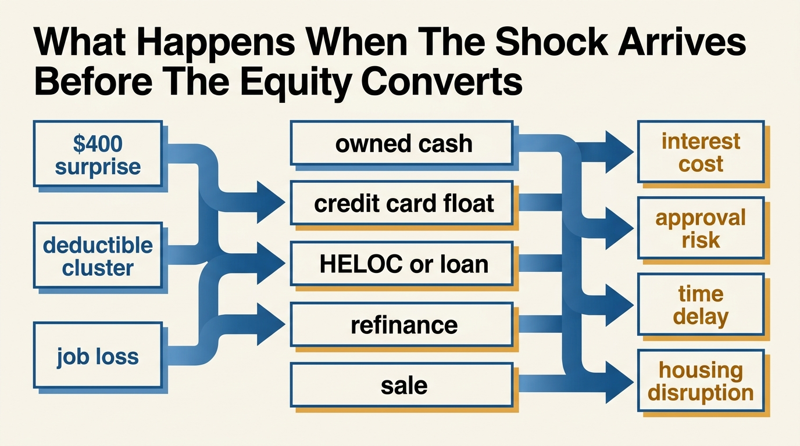

Home Equity Is Not Emergency Liquidity
On May 13, 2026, the Federal Reserve reported that 63 percent of adults said they would cover a hypothetical $400 emergency expense with cash or its equivalent. The detailed appendix shows a tighter fact underneath: only 43 percent pointed specifically to cash, checking, or savings. That gap is the reason households should stop counting home equity as emergency liquidity.
Home equity is real wealth. It can be large. It can anchor long-run household balance sheets. None of that makes it immediate defense. Emergency liquidity is about what can absorb a shock on the timetable the shock arrives. A deductible cluster, urgent move, family disruption, or job loss asks for usable cash or near-cash. It does not ask whether the family owns a valuable house in theory.
This distinction sounds obvious, yet households blur it constantly. Rising home values feel like a reserve fund because the wealth number is visible and the home is familiar. But the routes from equity to spendable money are conditional. Borrowing against the house requires lender approval and ongoing repayment. Cash-out refinancing depends on current rates, underwriting, and timing. Selling the home is slower, more disruptive, and often incompatible with the reason the money is needed. If liquidity requires a new liability, a market transaction, or a major lifestyle shock, it is not emergency liquidity in the strict sense that household defense requires.
Core claim: home equity belongs in net worth and long-horizon planning, but it should sit outside the emergency-liquidity bucket because access is conditional, slow, and costly exactly when households most want the money to behave like cash.
What The 2026 Federal Reserve Release Actually Tells Us
The Board of Governors released the 2025 report on the economic well-being of U.S. households on May 13, 2026. The headline result was encouraging in one sense: 73 percent of adults reported that they were doing okay or living comfortably financially. The emergency-expense question was less reassuring. Sixty-three percent said they would cover a $400 emergency expense using cash or its equivalent. In the appendix tables, the narrower measure is 43 percent using money already sitting in checking, savings, or cash.
That difference matters because it exposes how quickly the concept of liquidity gets stretched. “Cash or its equivalent” can include drawing on a credit card that is paid at the next statement cycle or relying on friends and family. Those are not the same as cash already controlled by the household. If the broad federal measure still leaves more than one-third of adults outside a clean yes, then the claim that housing wealth has solved resilience for the median household should be treated skeptically.

What CFPB Says About Equity
The Consumer Financial Protection Bureau was explicit in its January 15, 2025 issue spotlight on home equity contracts: U.S. homeowners have more than $35 trillion in home equity, and that equity is illiquid. That is the sentence many household balance sheets need taped to the top of the page. Wealth and liquidity are not synonyms. Housing wealth can expand for years while a family remains operationally exposed to even modest cash shocks.
CFPB's ordinary loan guidance makes the point even more concrete. A home equity loan or home equity line of credit is borrowing secured by the home. If the borrower cannot repay, the lender could foreclose. That means the apparent reserve is unlocked not by moving money from one owned pocket to another, but by adding a liability that can endanger the underlying asset. Households that count unused borrowing capacity as if it were stored cash are overstating their defense layer.
This is the practical difference between optional borrowing and owned liquidity. Borrowing may still be rational. A HELOC can be useful. A cash-out refinance can solve a real problem. But these are financing decisions, not proof that the emergency fund already existed. The asset is the collateral. The liquidity arrives only after another institution agrees to rent the household temporary flexibility on terms that may be much worse than last cycle.
A family can be house-rich and still cash-fragile because equity becomes usable only after time, underwriting, or new debt enters the picture.
Why The Distinction Became Harder To Ignore
For years, low-rate conditions made home equity feel close enough to cash that many households stopped caring about the distinction. If refinancing was cheap and home values kept rising, the conversion path looked almost frictionless. That regime made a category error feel harmless. Higher rates made the error expensive again. The same house that once supported a low-cost cash-out strategy can now demand a much higher borrowing rate or a much bigger opportunity cost.
This is why the article is not a semantic exercise. Liquidity quality changes when rates, underwriting standards, and housing turnover conditions change. A net-worth number can stay large while usable resilience shrinks. That is exactly the scenario WealthMeter exists to model: assets that look comforting in a spreadsheet but defend the household poorly on a deadline.

How To Classify The Balance Sheet More Honestly
The clean fix is to split the household balance sheet into at least three layers. First, owned liquidity: cash, checking, savings, and short-duration assets that can be mobilized without negotiation. Second, conditional liquidity: HELOC capacity, margin, personal credit, and other lines that require a lender, collateral, or both. Third, slow capital: home equity beyond committed lines, retirement assets, private business value, and other holdings that are economically real but operationally slow.
Once those layers are separated, several common myths disappear. A large unrealized housing gain no longer gets mistaken for a six-month runway. A HELOC does not get booked as if it were sitting in a checking account. A household that owns an expensive home but carries thin cash stops presenting itself as fully resilient. The balance sheet becomes less flattering and more decision-useful.
Known, Inferred, And Unknown
| Category | Assessment |
|---|---|
| Known | The Federal Reserve reported on May 13, 2026 that 63 percent of adults would cover a $400 emergency expense with cash or its equivalent, while the appendix shows 43 percent naming cash, checking, or savings specifically. |
| Known | CFPB stated on January 15, 2025 that U.S. homeowners have more than $35 trillion in home equity and that home equity is illiquid. |
| Known | CFPB guidance states that failure to repay a home equity loan can put the home at risk of foreclosure. |
| Inferred | Many households still overstate their resilience by counting conditional access to home-based borrowing as if it were already owned cash. |
| Unknown | How many homeowners who feel financially secure would still qualify as resilient after separating owned liquidity from lender-controlled liquidity. |
Use The Explorer, Not The House Price Headline
WealthMeter works better when the question is framed correctly. The issue is not whether a house increased net worth. The issue is what part of the household balance sheet can actually buy time. That is why the most useful next click is the Explorer and the main rank tools, not another headline about median home values. A house can be an asset and still be the wrong asset to count on during an emergency.
Open The Explorer
Compare household wealth structures with a cleaner distinction between paper gains, real rank, and liquidity that is actually usable.
Open Wealth ExplorerFurther Reading Inside The Site
This piece connects directly to The Asset-Rich, Cash-Poor Paradox, The Liquidity Illusion, and The Hidden Costs of Ownership. Each addresses the same structural error from a different angle: wealth that looks large can still be badly matched to the timing of real life.
Source List
Board of Governors of the Federal Reserve System. Report on the Economic Well-Being of U.S. Households in 2025. Executive summary published May 2026.
Board of Governors of the Federal Reserve System. Report on the Economic Well-Being of U.S. Households in 2025: Savings and Investments, plus Supplemental Appendixes, Appendix B. Published May 2026.
Consumer Financial Protection Bureau. Issue Spotlight: Home Equity Contracts: Market Overview. Published January 15, 2025.
Consumer Financial Protection Bureau. What is a home equity loan? Last updated September 11, 2024.